| 日付 | 2010年1月17日（日） |
|---|---|
| 山域 | 丹沢 |
| メンバー | グループ（男2女2） |
| 山行形態 | 日帰り |
| アクセス | 電車、バス |
| ルート (Map) | 寄→くぬぎ山→鍋割山→小丸尾根→二俣→大倉 |
友人に誘われて、鍋割山に行くことにする。塔ノ岳の隣にある人気の山だ。
過去にも何度か行った山だが、今回は急坂が続く、くぬぎ山経由のコースを登る。
8:49 寄バス停到着。標高285m。
本日も快晴。バスからは富士山がきれいに見えた。
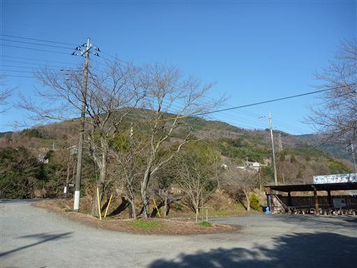
茶畑の中から登山道に入っていく。
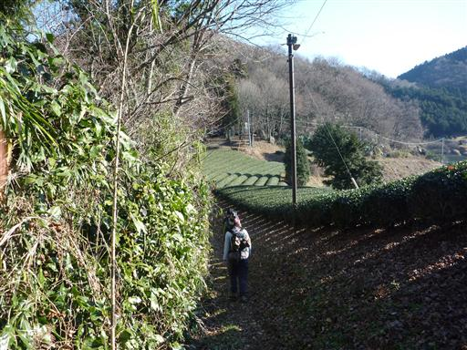
しばらく歩くと急登が始まる。この辺りは杉植林地帯が続く。
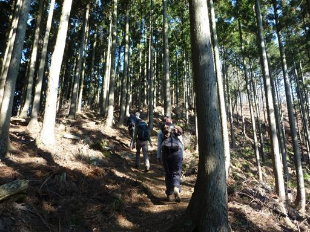
山頂からは東の展望が広がっている。
大きく見えるのは塔ノ岳、その左の小さい山が鍋割山だ。
ここからだと塔ノ岳は一際大きく見える。
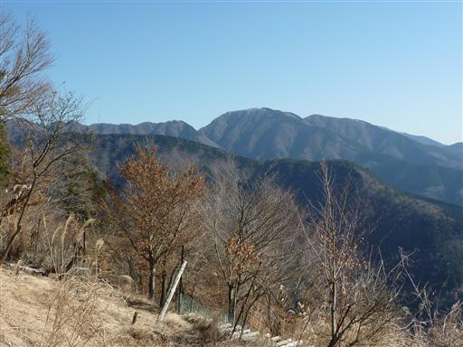
くぬぎ山山頂到着。明るく開けたピークだ。
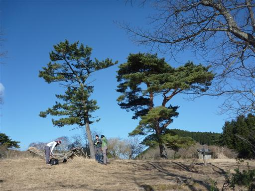
下りになると北斜面なので途端に雪が現れる。
滑りやすい道を慎重に下っていく。
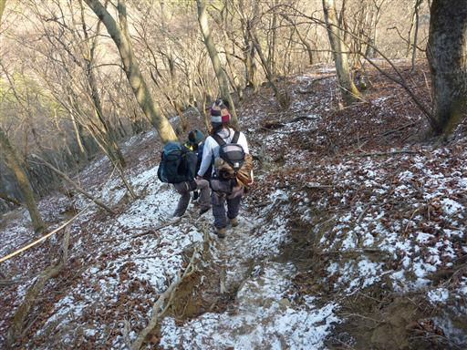
この辺りは落葉広葉樹が広がる気持ちの良いところだ。
少しやせ尾根になっているところもあるが、道は非常に歩きやすい。
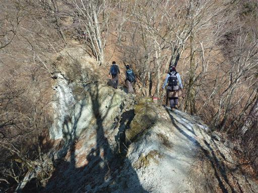
山頂近くになると常緑樹が目立ってくる。
今までと明らかに植生が異なるが、植えられたものなのだろうか？
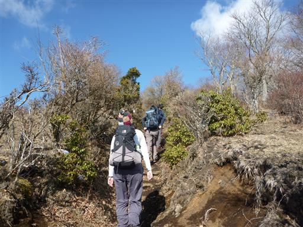
左側の展望がようやく開けたが、もう富士山はほとんど雲の中だ。
どんなに晴れていても昼になると雲がかかるのはいつものことだ。
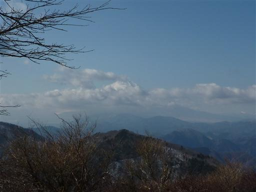
11:53 鍋割山山頂到着。標高1273m。
1年ぶりの鍋割山だ。山頂はうっすらと雪に覆われているが
多くのハイカーが訪れている。
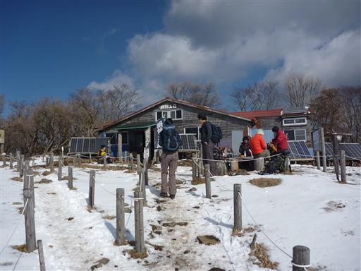
今日の展望はそこそこ。富士山は完全に雲に隠れてしまったが、
南アルプスや丹沢の山々はよく見えている。
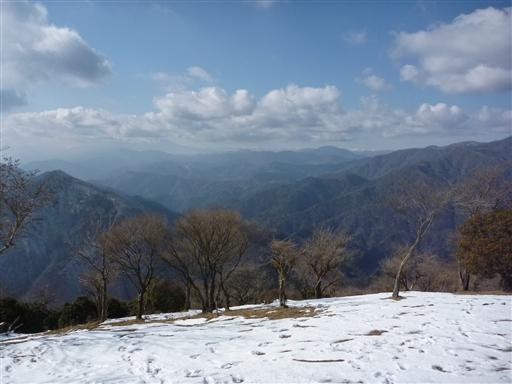
鍋割山荘名物の鍋焼きうどんを食べて、下山を開始する。
しばらくは塔ノ岳に続く稜線を歩くが、この辺りは少し雪が多い。
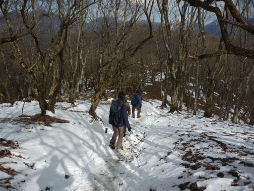
左手には蛭ヶ岳をはじめとする丹沢の山々が見渡せる。
登山が困難なほどの雪はなさそうだ。
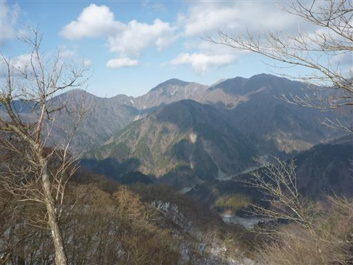
稜線から外れて、下山道に入っていく。
少し下るともう雪はなくなってしまう。
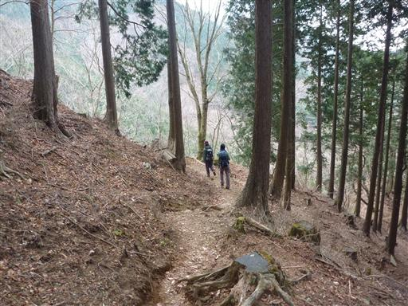
登山道入口付近にはヤマビル注意の看板がある。
ヤマビルの生息域はどんどん広がっているようだ。
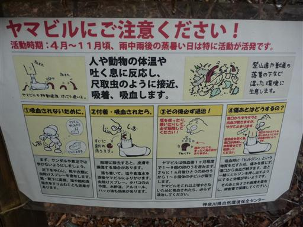
ここから少し長めの車道を歩いてバス停を目指す。
15:50 大倉バス停到着。標高285m。